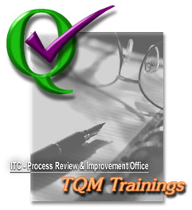

|
Process
Review and Improvement Office : Updates
TQM
Trainings
By
Joel Kisteria/Teodoro Soliva
Process
Review and Improvement Office (PRIO) in coordination with
Institute for Faculty Development (IFD) and Human Resources
Development Office (HRDO) is pleased to invite all DLSU
faculty members (full and part-time), school administrators,
ASP, ASF, and staff to attend its line-up of Total Quality
Management trainings.
Module
1: TQM Education and Concepts of Improvement
The
training aims to create awareness and appreciation of the
TQM concepts, principles, tools and approaches and their
application in the academic institutions. Also, to enhance
the capability of faculty members, school administrators,
and staff in integrating TQM in appropriate school courses/activities.
The
discussion will cover Change Management and practices on
how to have a successful change in the organization. It
will also acquaint (or re acquaint) participants to the
concepts of quality (TQM and Quality Principles).
Participants
will also be involved in practical exercises applying the
TQM tools.
Date:
March 5, 2002 (Tuesday)
Time: 9:00 - 5:00
Venue: Ortigas Room, DLSU Library
Module
2: 5S: The Practice of Good Housekeeping
The
training will cover the 5S good housekeeping and waste elimination
techniques to make things better in our workplace. 5S stands
for five Japanese words namely: Seiri (Sort), Seiton (Systematize),
Seiso (Sweep), Seiketsu (Sanitize), and Shitsuke (Self Discipline).
The participants will be introduced to the 5S program devised
by the Japanese industry in order to acquire sufficient
knowledge and skills in improving workplaces. Pointers,
good housekeeping practices, visual control applications,
and 5S benefits will also be covered.
Date:
March 6, 2002 (Wednesday)
Time: 1:30-5:00
Venue: LS Conference Room A
Module 3: Customer is Always…the
Customer
The
training will focus on customer service. The participants
will be introduced to determine who their customers are
and how to identify the needs of their customer. This module
is designed to increase awareness of the participants to
the barriers of customer service and how to deal with them.
It also includes ways on improving communication skills
to enhance productivity that leads to a competitive advantage.
Date: March 7, 2002 (Thursday)
Time: 1:30-5:00
Venue: Ortigas Room, DLSU Library
All
trainings are for free. Slots are limited to twenty-five
(25) participants only. So, hurry and reserve your slot
now! Reservations will be closed three (3) days before the
training schedule.
For
reservation of slots contact:
Janet
O. Chua (PRIO)
Tel. No.: 524-46-11 loc 317
E-mail: cscjoc@mail.dlsu.edu.ph
Gokengwei Bldg, Rm 308/ LS 108
Corazon
R. Siscar (IFD)
Tel. No.: 524-46-11 loc 127
E-mail: avpcrs@mail.dlsu.edu.ph
LS 108
Malaya
A. Punzalan (HRDO)
Tel. No.: 524-46-11 loc 161
E-mail: hrdomap@mail.dlsu.edu.ph
LS 103
|